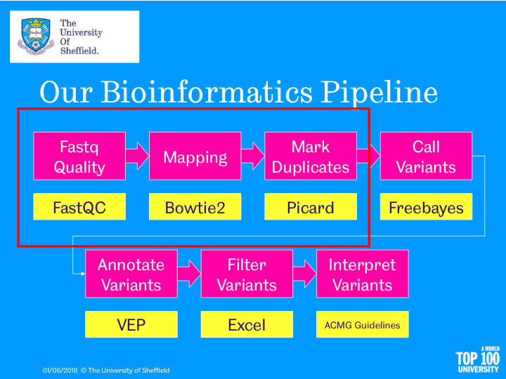
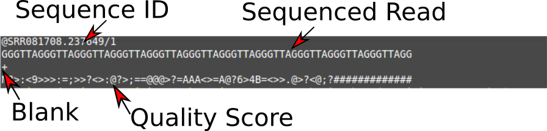
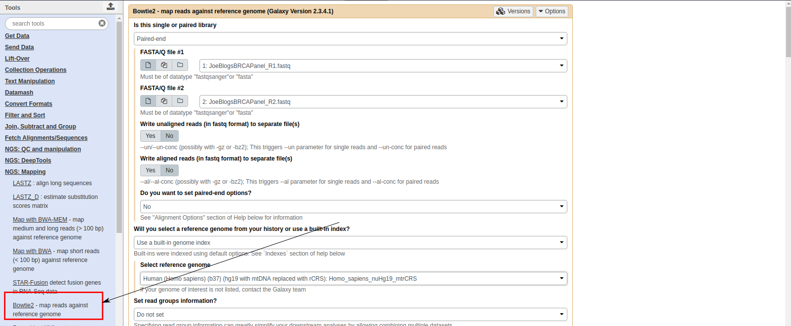
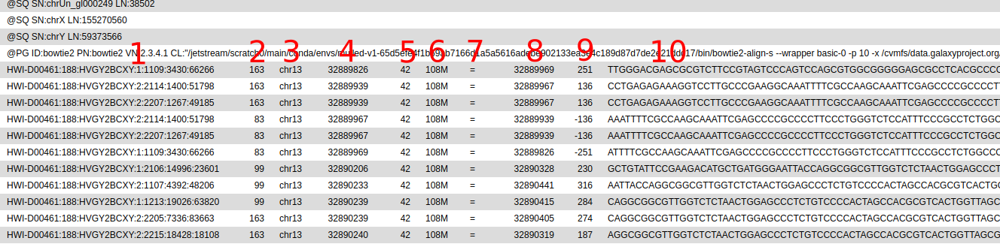

title: "" author: "Mark Dunning" output: htmlnotebook: toc: yes tocfloat: yes htmldocument: dfprint: paged toc: yes editor_options:

web : sbc.shef.ac.uk
twitter: SheffBioinfCore
email: bioinformatics-core@sheffield.ac.uk
This tutorial will cover the basics of NGS analysis using Galaxy; a open-source web-based platform for the analysis of biological data. You should gain an appreciation of the tasks involved in a typical NGS analysis and be comfortable with the outputs generated by a sequencing service.
Parts of this tutorial are based on the NGS tutorial from the Galaxy Project
The tutorial covers the following steps in our analysis pipeline

The data for this tutorial are publicaly-available exome sequencing data downsampled to the BRCA2 region from a fictitious patient. We will use these data throughout the course to call variants, filter and discuss the clinical impact of any mutations.
Make sure you check your email to activate your account
We can going to import the fastq files for this experiment. This is a standard format for storing raw sequencing reads and their associated quality scores. However, as we will see, the representation of the quality scores has changed over time.
You can import the data by:
Upload the sequence data by selecting the files JoeBlogsBRCAPanel_R1.fastq and JoeBlogsBRCAPanel_R2.fastq. Make sure the type is specified as 'fastqsanger'
when uploading.
You should now have these 2 files in your history:
JoeBlogsBRCAPanel_R1.fastqJoeBlogsBRCAPanel_R2.fastqYou can view the files you just uploaded by clicking the eye icon the history item. The first few lines should read as follows
JoeBlogsBRCAPanel_R1.fastq
@HWI-D00461:188:HVGY2BCXY:1:1101:1363:84148/1
TGTGTCATTTCTATTATCTTTGGAACAACCATGAATTAGTCCCTTGGGGTTTTCAAATGCTGCACACTGACTCACACATTTATTTGGTTCTGTTTTTGCCTTCCCTNN
+
DDDDDIHIIIIIHIIIIIIIIIIHIIIIIIIIIHIIIIIIHHIIIIIIIHIIIHIIIIIIIIIIIIIIIIIIIIIIIIIIIIIIIIIIIIIIIIIIIIHHIDHHIHC#
JoeBlogsBRCAPanel_R2.fastq
@HWI-D00461:188:HVGY2BCXY:1:1101:1363:84148/2
TGGAAAGACTTTTGGGGGGGGGAGTATTTTTCTTGTTTCTGGTTTTGGTTTTTTTGATCCGGGAAAGATTTTGTTTTTTGGAGGTTGGACTTTTGGGGAGGGGAAAAN
+
<00<<1111<1<11/0/<///</<0111DF11<<11111<11111<1/1<1D1///<<11<<</<1111<<11<DD1<//<110<11/11<0<0</0<0<<-//<<FE
Each read is described by 4 lines in the file:-

The first line is the unique identifier for each sequenced read. It can be used to encode information such as the sequencing machine, flow cell and lane that the read was generated from and the physical coordinates on the lane.
The quality scores are ASCII representations of how confident we are that a particular base has been called correctly. Letters that are further along the alphabet indicate higher confidence. This is important when trying to identify types of genome variation such as single base changes, but is also indicative of the overall quality of the sequencing. Different scales have been employed over time (resulting in a different set of characters appearing in the file). We will need to tell Galaxy which scale has been used in order that we can process the data correctly; hence why we explictly stated the files were of type fastqsanger when we uploaded them.
First of all, we convert the base-calling probability (p) into a Q score using the formula

$$ p = 10^{-Q/10} $$
Let's see this calculation for the first few bases of the first read in JoeBlogsBRCAPanel_R1.fastq; DDDDDIHI....
Character | Code | Minus 33 Offset | Probability ------------- | ------------- | ------------- | ------------- D | 68 | 35 | 0.0003162278 D | 68 | 35 | 0.0003162278 D | 68 | 35 | 0.0003162278 D | 68 | 35 | 0.0003162278 D | 68 | 35 | 0.0003162278 I | 73 | 40 | 0.0001000000 H | 72 | 39 | 0.0001258925 I | 73 | 40 | 0.0001000000
In practice, we don't have to convert the values as we have software that will do this automatically
FastQC is a popular tool from Babraham Institute Bioinformatics Group used for quality assessment of sequencing data. Most Bioinformatics pipelines will use FastQC, or similar tools in the first stage of the analysis. The documentation for FastQC will help you to interpret the plots and stats produced by the tool. A traffic light system is used to alert the user's attention to possible issues.
The most important image is whether the base quality decreases significantly over the length of the read

Good quality data should look something like:-

Look at the generated FastQC metrics for your uploaded fastq files. This data looks pretty good - high per-base quality scores (most above 30).
All is not lost if we observe poor quality bases towards the end of the read. There are a number of trimming options that we can use for NGS data and some of these are availble through Galaxy. Check out the Trimmming Reads section of the Galaxy NGS tutorial if you are interested in how we can trim our reads.
It is also worth bearing in mind that the tool is blind to the particular type of sequencing you are performing (i.e. whole-genome, ChIP-seq, RNA-seq) and the organism being sequenced, so some warnings might be expected due to the nature of your experiment. For instance, there are known sequencing composition biases that can occur at the beginning of RNA-seq reads.
We don't really spend much time look at fastq files, as most of our time is spent with aligned reads. i.e. we have used some software to tell us whereabouts in the genome each read belongs to. This will usually be performed for you as part of a sequencing service, but it is good to get an appreciation of the steps involved.
In this section we map the reads in our FASTQ files to a reference genome.
A plethora of different tools have been written to perform this task, and we will not describe it in detail. Links to some key publications are given below:-
Alignment relies on the reference genome being indexed so that the sequencing reads can be located more efficiently. The genome index is a highly-accessible data structure, and Galaxy includes indices for many popular genomes.

bowtie in the search boxThe result will be a .bam file that we will describe in the next section. This file is not human-readable, as it is compresed. But we can convert to a readable format for illustration purposes.

bam file formatUnlike most of Bioinfomatics, a single standard file format has emerged for aligned reads. Moreoever, this file format is consistent regardless of whether you have DNA-seq, RNA-seq, ChIP-seq... data.
The bam file is a compressed, binary, version of a sam file.
.sam filebwa.bam file. See later.@ character, followed by tab-delimited lines
The first part of the header lists the names (SN) of the sequences (chromosomes) used in alignment, their length (LN) and a md5sum "digital fingerprint" of the .fasta file used for alignment (M5).
```
@HD VN:1.0 SO:coordinate @SQ SN:chr10 LN:135534747 @SQ SN:chr11 LN:135006516 @SQ SN:chr11gl000202random LN:40103 @SQ SN:chr12 LN:133851895 @SQ SN:chr13 LN:115169878 @SQ SN:chr14 LN:107349540 @SQ SN:chr15 LN:102531392 @SQ SN:chr16 LN:90354753 ..... .....
```
We also have a section where we can record the processing steps used to derive the file ``` @PG ID:bowtie2 PN:bowtie2 VN:2.3.4.1 CL:"/jetstream/scratch0/main/conda/envs/mulled-v1-65d5efe4f1b69ab7166d1a5a5616adebe902133ea3e4c189d87d7de2e21ddc17/bin/bowtie2-align-s --wrapper basic-0 -p 10 -x /cvmfs/data.galaxyproject.org/byhand/hg19/hg19full/bowtie2index/hg19full -1 inputf.fastq -2 input_r.fastq" .... ....
```
Next is a tab-delimited section that describes the alignment of each sequence in detail.
``` SRR081708.237649 163 1 10003 6 1S67M = 10041 105 GACCCTGACCCTAACCCTGACCCTGACCCTAACCCTGACCCTGACCCTAACCCTGACCCTAACCCTAA S=<====<<>=>==@??;?>@@@=??@@????@??@?>?@@<@>@'@=?=??=<=>?>?=Q ZA:Z:<&;0;0;;308;68M;68><@;0;0;;27;;>MD:Z:5A11A5A11A5A11A13 RG:Z:SRR081708 NM:i:6 OQ:Z:GEGFFFEGGGDGDGGGDGA?DCDD:GGGDGDCFGFDDFFFCCCBEBFDABDD-D:EEEE=D=DDDDC:
```

Column | Official Name | Brief ------ | -------------- | ----------- 1 | QNAME | Sequence ID 2 | FLAG | Sequence quality expressed as a bitwise flag 3 | RNAME | Chromosome 4 | POS | Start Position 5 | MAPQ | Mapping Quality 6 | CIGAR | Describes positions of matches, insertions, deletions w.r.t reference 7 | RNEXT | Ref. name of mate / next read 8 | PNEXT | Postion of mate / next read 9 | TLEN | Observed Template length 10 | SEQ | Sequence 11 | QUAL | Base Qualities
There can also be all manner of optional tags as extra columns introduce by an aligner or downstream analysis tool. A common use is the RG tag which refers back to the read groups in the header.
The "flags" in the sam file can represent useful QC information
The combination of any of these properties is used to derive a numeric value
For instance, a particular read has a flag of 163

There is a set of properties that a read can possess. If a particular property is observed, a corresponding power of 2 is added multiplied by 1. The final value is derived by summing all the powers of 2.

Flag Value | Meaning ---------- | -------------------------------- 69 (= 1 + 4 + 64) | The read is paired, is the first read in the pair, and is unmapped. 77 (= 1 + 4 + 8 + 64) | The read is paired, is the first read in the pair, both are unmapped. 83 (= 1 + 2 + 16 + 64) | The read is paired, mapped in a proper pair, is the first read in the pair, and it is mapped to the reverse strand. 99 (= 1 + 2 + 32 + 64) | The read is paired, mapped in a proper pair, is the first read in the pair, and its mate is mapped to the reverse strand. 133 (= 1 + 4 + 128) | The read is paired, is the second read in the pair, and it is unmapped. 137 (= 1 + 8 + 128) | The read is paired, is the second read in the pair, and it is mapped while its mate is not. 141 (= 1 + 4 + 8 + 128) | The read is paired, is the second read in the pair, but both are unmapped. 147 (= 1 + 2 + 16 + 128) | The read is paired, mapped in a proper pair, is the second read in the pair, and mapped to the reverse strand. 163 (= 1 + 2 + 32 + 128) | The read is paired, mapped in a proper pair, is the second read in the pair, and its mate is mapped to the reverse strand.
See also

The CIGAR (Compact Idiosyncratic Gapped Alignment Report) string is a way of encoding the match between a given sequence and the position it has been assigned in the genome. It is comprised by a series of letters and numbers to indicate how many consecutive bases have that mapping.
Code | Description ------------- | ------------- M | alignment match I | insertion D | deletion N | skipped S | soft-clipping H | hard-clipping
e.g.
68M
1S67M
15M87N70M90N16M
We will now generate a few basic statistics about the alignment of our data
The tool will also report how many PCR Duplicates have been found in the data. But as we haven't yet run any software to identify such reads, the flagstat output will show 0 reads.
The preparation of a sequencing library requires PCR amplification of your starting material. This can lead to some DNA fragments being over-represented in your data. As our DNA fragments are formed in a random process, and relatively small compared to the number of bases to be sequenced from the genome (3Gb in humans), we tend to think the two DNA fragments that have identical starting and ending position are unlikely to have occured due to chance. Some software, such as Picard will identify such artefacts and mark them for attention by downstream methods. i.e. they are not completely discarded from the analysis.

Warning the assumption about reads having the same start location being PCR duplicates falls down when we do sequencing for a very specific region of the genome. e.g. targeted sequencing from a panel of cancer genes. Running a tool to mark PCR duplicates on such data would recommend a high proportion of reads be ignored from further analysis.